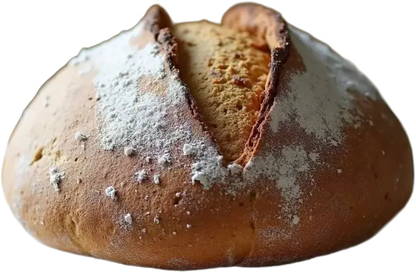
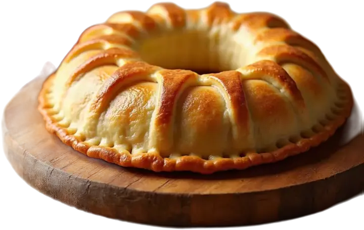
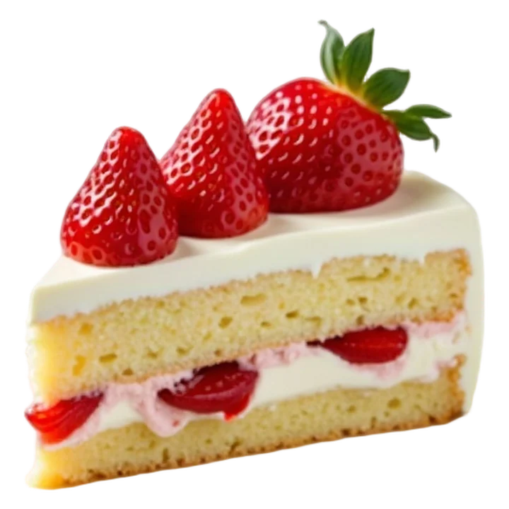
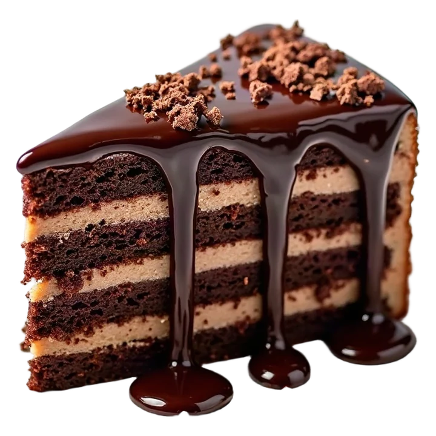
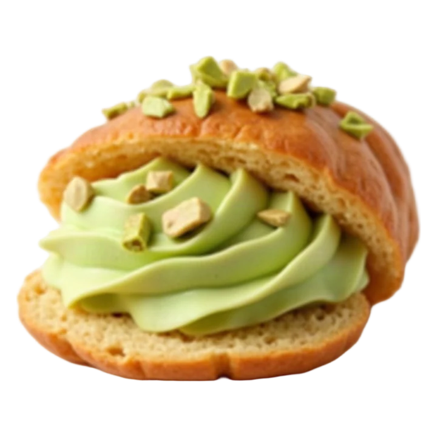
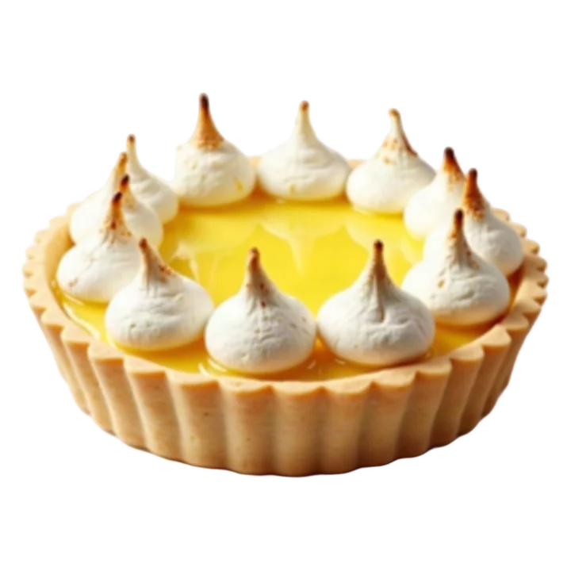
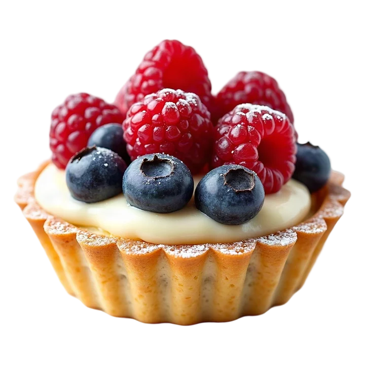

Órbita de producto
Disco de color, texto circular que gira (y acelera al hacer scroll) y productos recortados que entran y salen en órbita. El color de todo cambia con cada producto. Se puede deslizar con el dedo y con las flechas del teclado.
Del obrador, hoy
Recién salido del horno
Ejemplo con los productos de la demo de panadería. Necesita fotos de producto recortadas (sin fondo); las recortamos nosotros.






Archivo reutilizable: /efectos/orbita.js · ya aplicado en la demo de panadería y, en versión anterior, en la portada de la pastelería Dulce Nube.
Frase que se ilumina con el scroll
Las palabras se van encendiendo una a una según bajas. Obliga a leer el mensaje clave de la marca.
Cada cliente que no te encuentra en Google es un cliente que entra por la puerta de tu *competencia.* Nosotros hacemos que te *encuentre* a *ti.*
Cinta inclinada que reacciona al scroll
Dos cintas cruzadas que avanzan solas, aceleran al hacer scroll y cambian de dirección al subir. Da energía entre secciones.
Tarjetas holográficas 3D
Se inclinan siguiendo el ratón con un reflejo tornasolado, como una carta coleccionable. El producto «sale» de la tarjeta.

Fresa y nataTarta del mes
Chocolate intensoLa más pedida
PistachoEdición limitadaLinterna: el cursor revela
La foto está a oscuras y el puntero (o el dedo) la ilumina, descubriendo la imagen real. En móvil la luz se mueve sola. Perfecto para antes/después.

Pasa el ratón para encender la luz
Titular que se descifra
Las letras aparecen como un código que se resuelve al entrar en pantalla. Muy tecnológico.
Tu recepcionista que
nunca duerme
Abanico de cartas
Un mazo que se abre en abanico al aparecer. Al pulsar una carta, salta al frente.

Limón
Frutos rojosBotón magnético con destello
El botón principal «atrae» al cursor cuando se acerca y tiene un brillo que recorre el borde. Sube los clics en la llamada a la acción.
Explorador de ingredientes
Paneles que se despliegan y toman el color del ingrediente (inspirado en el vídeo de la tienda de productos). En móvil se convierte en acordeón.
Mantequilla
De vaca asturiana, la que da el hojaldre crujiente.
Pistacho
Tostado en el obrador y molido cada semana.
Fresa
De temporada, de productores de la zona.
Masa madre
Con 10 años de vida y 48 horas de fermentación.
Ventana que se abre
La imagen empieza recortada y se abre a pantalla completa mientras bajas, sin bloquear el scroll (versión ligera del efecto que quitamos de la web de la agencia).

Cifras rodantes
Los números giran como un cuentakilómetros hasta su valor al aparecer.
tartas entregadas
valoración en Google
años horneando